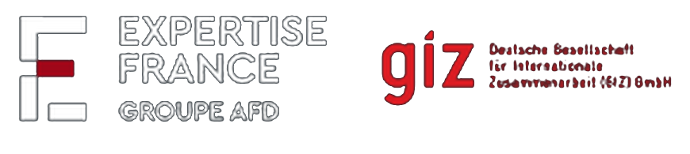
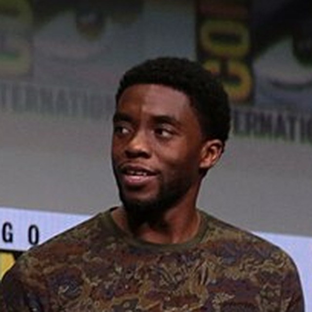
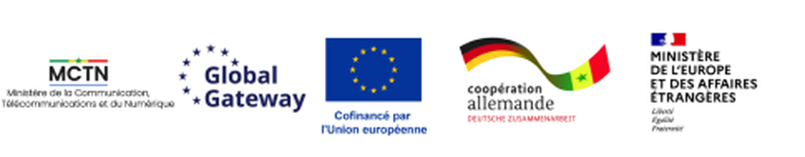

Mis en œuvre par


MAQUETTE · PHOTO ILLUSTRATIVE
AgriSense
Des capteurs solaires à bas coût et une application mobile qui aident les petits producteurs à décider quand irriguer, pour économiser l'eau et augmenter les rendements.
Ibrahima SY◈ AGRISENSE
